Every module, one database
BuildCore 2.48.0 covers the whole contracting business. Each figure on one screen comes from the work entered on another, so nothing is typed twice and the books always agree with the site.
Know what needs you today
Open BuildCore and see what needs a decision, what this month looks like and which figures are still missing.
- Needs attention grouped as Important, This week, Review, For info
- Contract notices only for employer and neutral delays
- This month panel: work done, billed, received, paid, cost
- Financial command centre with 16 alerts, owners and escalation
- Portfolio and project comparison across every site
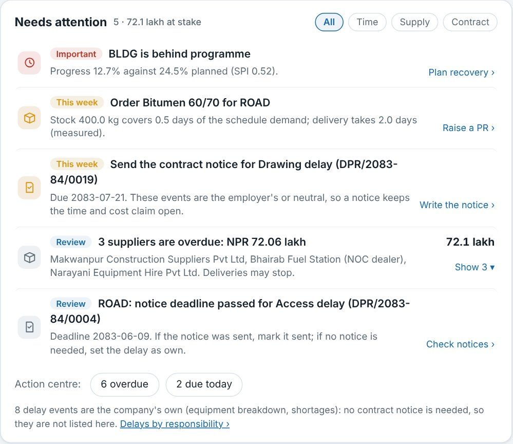
One Universal DPR for every kind of project
Roads, buildings, hydropower, bridges and water: one report per project, date and shift, with the project's own template.
- Reported and accepted quantities side by side, with scope and balance
- Labour copied from yesterday; machine lines fill themselves
- Continuing issues with hours lost and decisions required
- Approval updates progress, cost, logsheets and events
- 15 DPR reports and print layouts
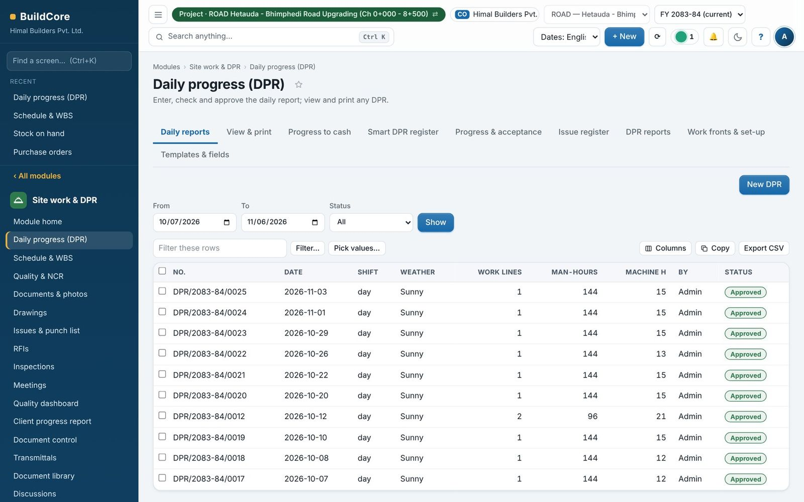
BOQ by location, measured and billed
Every BOQ line has a short code made of location and item, so the same item in ten places is never mixed up or counted twice.
- Import BOQ with locations from Excel
- Summary by item and short codes tabs
- Measurements verified before billing
- Variations, contracts, notices, bonds and claims register
- Subcontract work orders and execution plan
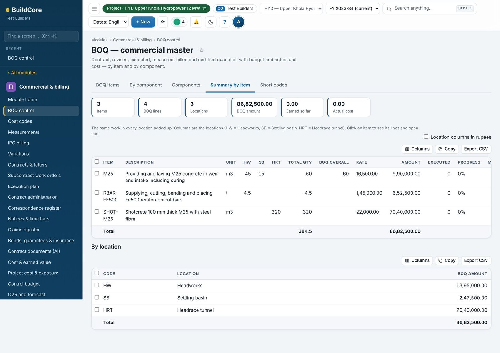
From measurement to cash
The IPC fills from verified measurements; certification posts the client invoice with VAT, TDS, retention and advance recovery.
- Previous, current and cumulative per BOQ item
- Billing beyond revised quantity waits for a variation
- Billing pipeline from prepared to paid
- Receivables in five age buckets with collection actions
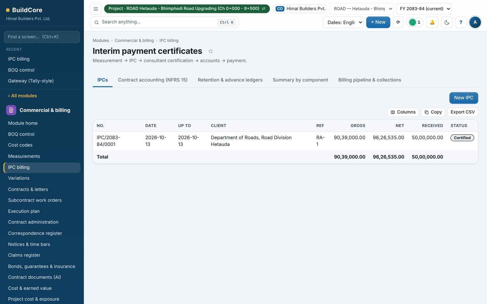
Profit per BOQ item, every month
Control budget from rate analysis, cost codes on every cost, CVR and a monthly close that three people sign.
- Control budget straight from the rate analysis
- Cost to complete and forecast profit per BOQ item
- Forecast only where a cost estimate exists
- Eight-step monthly close: QS, accounts, PM sign; director locks
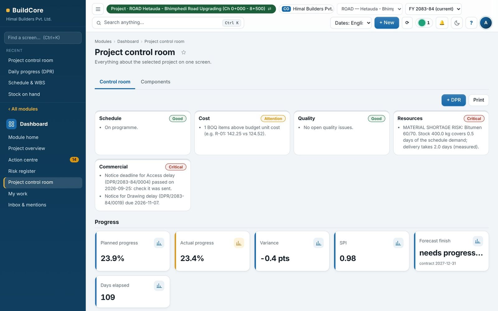
Stock that agrees with the books
Requisition, receipt, issue, return, transfer and count, for every project store and the central store.
- Goods received with challan, vehicle, accepted and rejected quantity
- Import GRNs from Excel
- Issue to BOQ item and cost code
- Stock count and reconciliation to the ledger
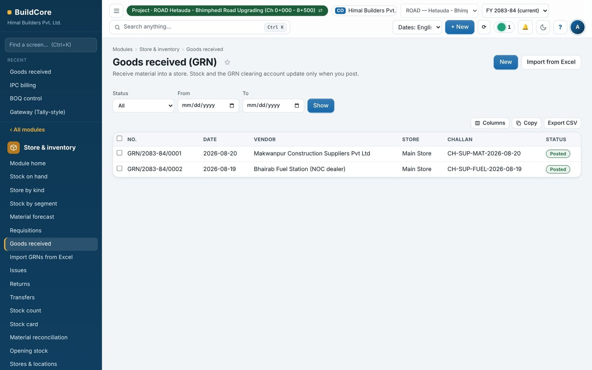
Buy at the right price, pay for what arrived
Purchase requests with past prices, quotation comparison, POs with checks, and three-way match of goods, bills and payments.
- Rate fills from this project's posted GRNs; past prices panel
- Quotation comparison marks L1; other choice needs a reason
- PO approval check: stock, budget left and cash
- Three-way match per vendor and Bill vs actual
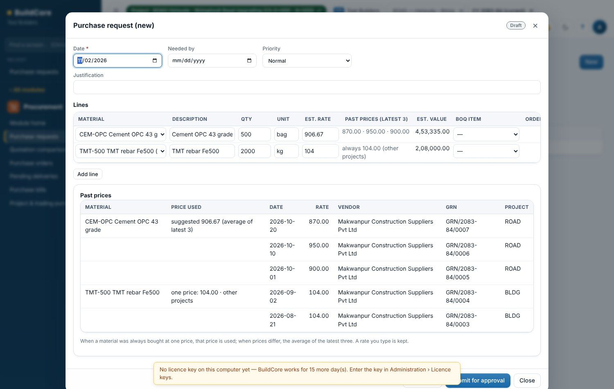
Books that keep themselves, the Tally way
Site and store documents post themselves through an approval queue; accountants also have a Tally-style Gateway.
- F4–F7 vouchers, bill-wise references, cost centres
- Payment requests, wages from DPR, salaries, petty cash
- Bank statement import and reconciliation
- VAT, TDS, trial balance, P&L and balance sheet
- Lock date, year close and Edit Log
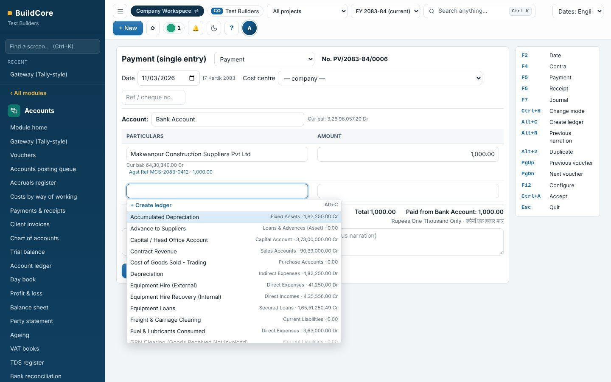
See a cash shortage before it happens
Thirteen weeks of money in and out, from the documents already in BuildCore.
- Client promises, certified bills, IPCs awaiting certification
- Bills, wages, VAT, TDS, loans and payment requests
- Prudent closing with only confirmed receipts
- Funding gap with the actions that close it
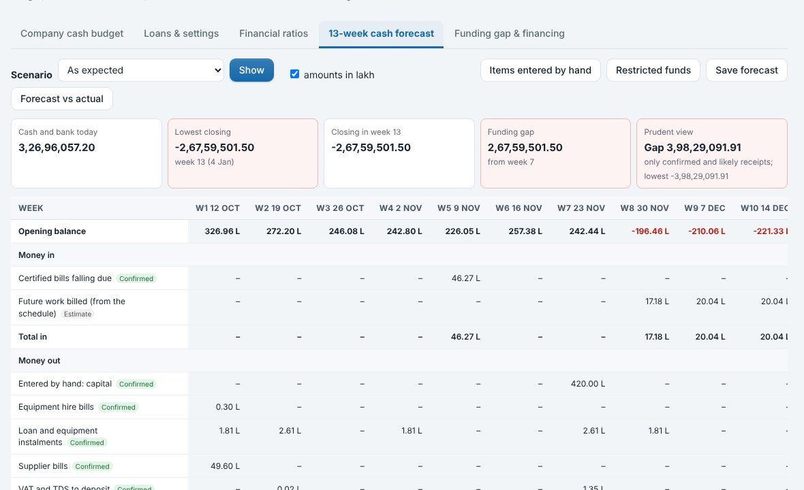
Every machine hour counted once
Logsheets built from the DPR, cost per hour, hire, maintenance and profit per machine.
- Monthly logsheets by English or Nepali month
- Hours and output per machine and attachment
- One depreciation per machine and month
- Hire bills from approved hours only; machine P&L
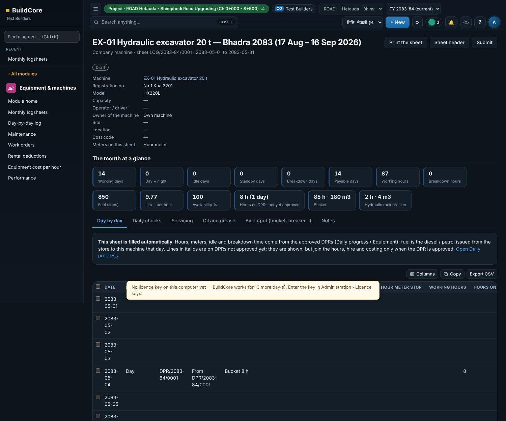
Crusher, batching, fixed assets and norms
Production at real cost, an NFRS asset register and 1,740 built-in norms for rate analysis.
- Crusher and batching plant: mix designs, production runs
- Fixed assets (NFRS): depreciation, leases, impairment, tax
- DoR, DUDBC, electrical and sanitary norms
- Rate books and hire rates
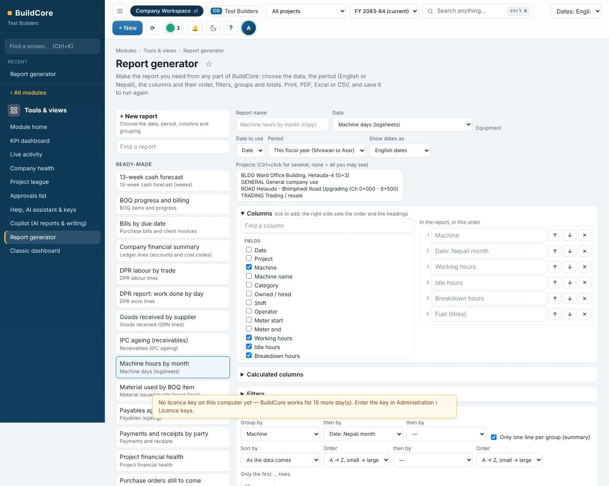
Right screens for each person, data safe
Users by job and project, project teams, backups, licences and working across office and sites.
- Job + where: head office or chosen projects
- Copy a project team; check access list
- See / Enter / Approve rights per job
- Daily backups, site packs, office network, server edition
- Forgot password works offline
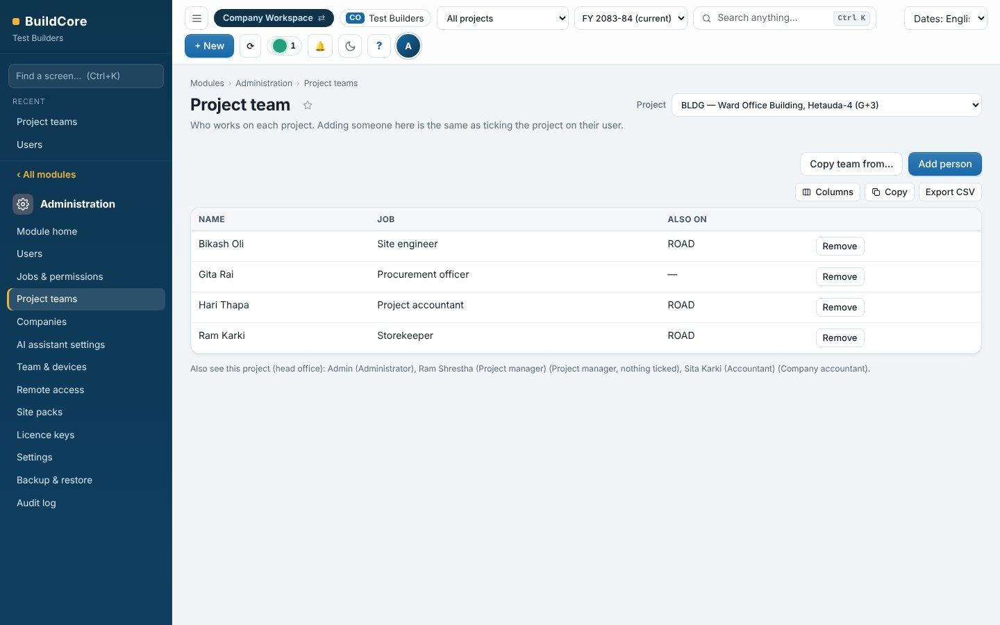
New rules never surprise your accountant
Features that change figures or rules start off on a company updated from an older version, so nothing changes until accounts has looked. New companies start with them on. Every change records who made it.
| Feature | Setting | Updated company | New company | Where to turn it on |
|---|---|---|---|---|
| One project position | pfp_on | off | on | Commercial › CVR and forecast › Project position |
| Monthly runs by Nepali month | run_months | English | Nepali | Project position tab |
| Payments need an approved request | money settings | off | on | Accounts › Payments & receipts › Money settings |
| Papers before posting | papers rules | off | bills, payments, large vouchers | Accounts › Payments & receipts › Papers rules |
| One contract register | contract register | off | on | Commercial › Contracts & letters |
| Match receipts, bills & payments | mt_on | off | on | Procurement › Purchase bills › Match settings |
| Tally-style Gateway | tl_on | off (reverse only) | on (edit with log) | Accounts › Gateway › F11 Features |
| BOQ short codes and summary | bx_on | off | on | Commercial › BOQ control › Short codes |
| Informative dashboard | gl_on | on | on | Display only |
Bring one BOQ and one month of site records.
We load them and show you the DPR, the bill, the books and the margin in one sitting.